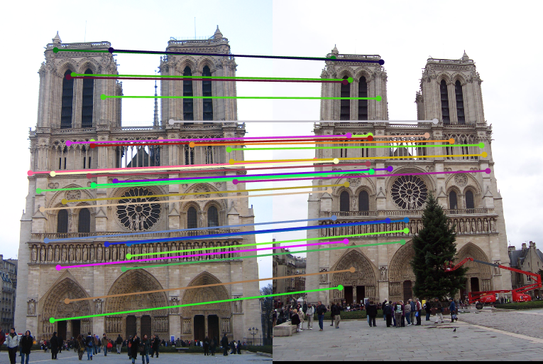

Project 3: Camera Calibration and Fundamental Matrix Estimation with RANSAC
The goal of this assignment is to estimate the camera projection matrix and the fundamental matrix, with and without using RANSAC. This assignment is divided into three parts. In the first part, we detect the camera center and estimate the projection matrix using functions calculate_projection_matrix() and compute_camera_center(). In the second part, we estimate the fundamental matrix using a function estimate_fundamental_matrix(). In the third part, we estimate the fundamental matrix with unreliable SIFT matches using RANSAC, in a function ransac_fundamental_matrix(). The starter code uses VLFeat to do SIFT matching.
In Project 2, we used harris corner detector to detect interest points, an implemntation of SIFT to detect features and various methods and distance measures to match the features. This did not work for the challenging images of Gaudi's Episcopal Palace. In this project we use RANSAC to find the fundamental matrix with the most inliers. Thus, we can filter away spurious matches and achieve near perfect point to point matching.
Part 1: Estimating the projection matrix and the camera center
The goal here is to compute the projection matrix that maps the 3D world coordinates to 2D image coordinates. This can be done using a projection matrix. Once an accurate projection matrix M is ready, it is split into matrix K of intrinsic parameters and matrix [R | T] of extrinsic parameters. Let us define M as being made up of a 3x3 matrix called Q and a 4th column called m_4 :
M = (Q | m_4 )
Tha camera center C can then be calculated as:
This can be done using a set of non-homogeneous coordinates. The results are as follows:
I implemented the same using a set of homogeneous coordinates also. The equation for 3D to 2D conversion of homogeneous coordinates is :
The results are as follows:
Algorithm
- Read 2D coordinates and 3D coordinates into 2 separate matrices.
- Generate a matrix representing a system of equations to solve for M.
- Take the matrix left-division in case of non-homogeneous coordinates. For homogeneous coordinates, take the singular value decomposition (SVD) of matrix, retrieve the right singular vectors and reshape it into a 3*3 matrix.
- Split projection matrix into Q and m4. Calculate camera center as [-1 * Q \ m4]
Part 2: Estimating the fundamental matrix for image pairs
The goal here is to estimate the mapping of points in one image to lines in another by means of the fundamental matrix The approach here is similar to part1. The definition of a fundamental matrix is:
The results obtained are as follows:
Base Image pair:
Algorithm
- Read the two images.
- Generate a matrix representing a system of equations to solve for F.
- Take SVD of the matrix, retrieve the right singular vectors and reshape it into a 3*3 matrix.
- Take U,S,V from above step.
- Set smallest singular value to 0.
- Multiply U,S, and V-transpose to get F.
Part 3: Fundamental Matrix with RANSAC
The goal here is to estimate the mapping of points in one image to lines in another by using RANSAC in conjunction with the estimated fundamental matrix. Random Sample Consensus (RANSAC) is an interative method to estimate parameters of a mathematical model from a set of observed data that contains outliers, when outliers are to be accorded no influence on the values of the estimates. The given started code make use of the VLFeat package to do SIFT matching for the image pair. These putative point correspondences and RANSAC work simultaneously to find the best fundamental matrix.
The results obtained are as follows:
|  |
Algorithm
- Read the two images.
- Set a count for number of iterations.
- Iterate over number of rows and take absolute value of error and accordingly assign them to the inlier arrays. Also increment the update variable.
- Compare values of update and best variables and assign the highest one to Best_Fmatrix.
- Check number of inliers.
- In case of more than 30 inliers, randomly choose 30 from a random sample of indices from the 2 inlier arrays.
The other results obtained are:
Graduate Extra Credits
The estimate of a fundamental matrix can be improved by normalizing the coordinates before computing the fundamental matrix. The normalization through linear transformation is as follows:
The tranform matrix T is the product of the scale and offset matrices. c_u and c_v are the mean coordinates. To compute a scale s we can estimate the standard deviation after subtracting the means.
The results obtained are as follows:

|

|